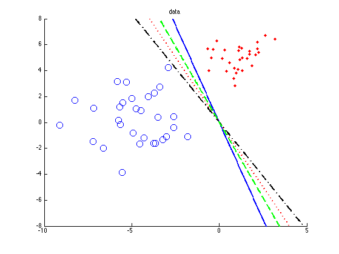
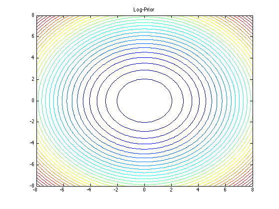
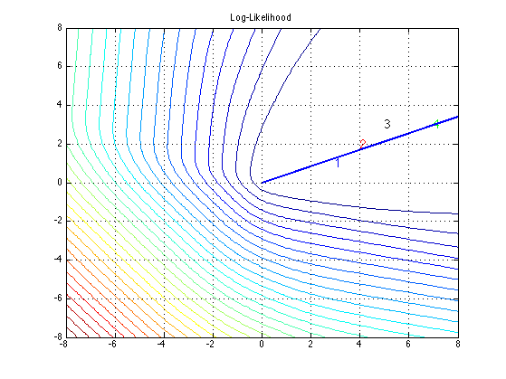
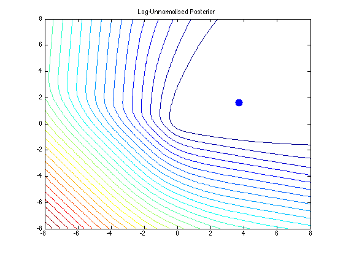
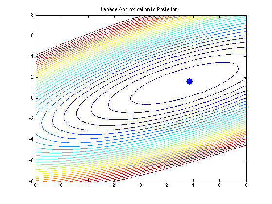
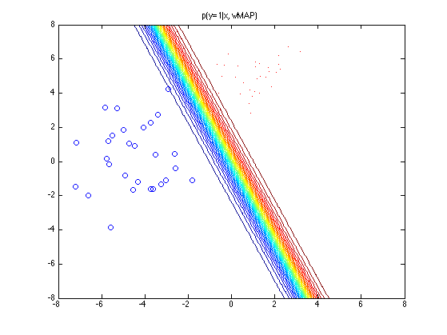
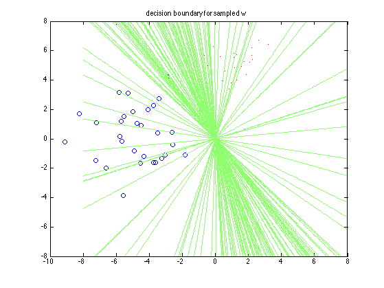
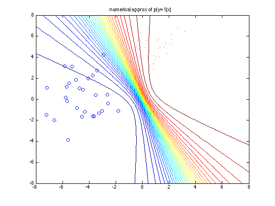
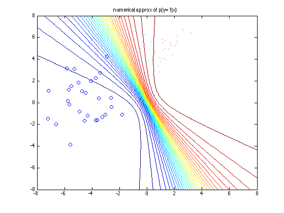

Example of the laplace approximation for logistic regression
Based on code written by Mark Girolami
Contents
% This file is from pmtk3.googlecode.com
setSeed(0);
We generate data from two Gaussians:
x|C=1 ~ gauss([1,5], I) x|C=0 ~ gauss([-5,1], 1.1I)
N=30; D=2; mu1=[ones(N,1) 5*ones(N,1)]; mu2=[-5*ones(N,1) 1*ones(N,1)]; class1_std = 1; class2_std = 1.1; X = [class1_std*randn(N,2)+mu1;2*class2_std*randn(N,2)+mu2]; t = [ones(N,1);zeros(N,1)]; alpha=100; %Variance of prior (alpha=1/lambda) % Limits and grid size for contour plotting Range= 8; Step=0.1; [w1,w2]=meshgrid(-Range:Step:Range,-Range:Step:Range); [n,n]=size(w1); W=[reshape(w1,n*n,1) reshape(w2,n*n,1)];
Plot data
figure; hold on plot(X(find(t==1),1),X(find(t==1),2),'r.', 'markersize', 10); plot(X(find(t==0),1),X(find(t==0),2),'bo', 'markersize', 10); title('data') % Plot predictions for certain chosen valyes of w Xgrid = W; % grid of x1, x2 valyes ws = [3 1; 4 2; 5 3; 7 3]; [styles, colors, symbols, str] = plotColors(); for ii=1:size(ws,1) w = ws(ii,:)'; pred = 1./(1+exp(-Xgrid*w)); [cc,h]=contour(w1,w2,reshape(pred,[n,n]),1); set(h, 'linestyle', styles{ii}, 'linecolor', colors(ii), 'linewidth', 2); end printPmtkFigure('logregLaplaceGirolamiData')
Plot prior, likelihood, posterior
f=W*X'; Log_Prior = log(gaussProb(W, zeros(1,D), eye(D).*alpha)); Log_Like = W*X'*t - sum(log(1+exp(f)),2); Log_Joint = Log_Like + Log_Prior; figure(); contour(w1,w2,reshape(-Log_Prior,[n,n]),30); title('Log-Prior'); printPmtkFigure('logregLaplaceGirolamiPrior') figure; contour(w1,w2,reshape(-Log_Like,[n,n]),30); title('Log-Likelihood'); hold on % Plot points corresponding to chosen lines for ii=1:size(ws,1) w = ws(ii,:)'; text(w(1), w(2), sprintf('%d', ii), 'color', colors(ii), 'fontsize', 14); end grid on % Identify the parameters w1 & w2 which are MLE [i,j]=max(Log_Like); wmle = W(j,:) % mle satisfies w1 = 2.35*w2 and is maximized wmle(1)/wmle(2) %plot(wmle(1), wmle(2),'.','MarkerSize',40); line([0 wmle(1)], [0 wmle(2)], 'linewidth', 2); printPmtkFigure('logregLaplaceGirolamiNLL') figure; contour(w1,w2,reshape(-Log_Joint,[n,n]),30); title('Log-Unnormalised Posterior') hold on % Identify the parameters w1 & w2 which maximise the posterior (joint) [i,j]=max(Log_Joint); plot(W(j,1),W(j,2),'.','MarkerSize',40); printPmtkFigure('logregLaplaceGirolamiPost') % Compute the Laplace Approximation %model = logregBinaryFitL2IRLS(X, t, 1/alpha, false); %wMAP = model.w; C = model.C; pp = preprocessorCreate('addOnes', false, 'standardizeX', false); model = logregFitBayes(X, t, 'method', 'laplace', 'lambda', 1/alpha, 'preproc', pp); wMAP = model.wN; C = model.VN; Log_Laplace_Posterior = log(gaussProb(W, wMAP', C)+eps); figure; contour(w1,w2,reshape(-Log_Laplace_Posterior,[n,n]),30); hold on plot(W(j,1),W(j,2),'.','MarkerSize',40); title('Laplace Approximation to Posterior') printPmtkFigure('logregLaplaceGirolamiPostLaplace')
wmle =
8.0000 3.4000
ans =
2.3529
    Plot the predictive distribution for logistic regression
figure; Xgrid = W; % grid of x1, x2 valyes pred = 1./(1+exp(-Xgrid*wMAP)); contour(w1,w2,reshape(pred,[n,n]),30); hold on plot(X(find(t==1),1),X(find(t==1),2),'r.'); plot(X(find(t==0),1),X(find(t==0),2),'bo'); title('p(y=1|x, wMAP)') printPmtkFigure('logregLaplaceGirolamiPlugin') % Samples figure; plot(X(find(t==1),1),X(find(t==1),2),'r.'); hold on plot(X(find(t==0),1),X(find(t==0),2),'bo'); predMean = zeros(n*n,1); S = 100; for i=1:S wsamp = gaussSample(wMAP(:), C, 1)'; pred = 1./(1+exp(-Xgrid*wsamp)); predMean = predMean + pred; contour(w1,w2,reshape(pred,[n,n]),[0.5 0.5]); end title('decision boundary for sampled w') printPmtkFigure('logregLaplaceGirolamiSamples') % MC figure; predMean = predMean / S; contour(w1,w2,reshape(predMean,[n,n]),30); hold on plot(X(find(t==1),1),X(find(t==1),2),'r.'); plot(X(find(t==0),1),X(find(t==0),2),'bo'); title('MC approx of p(y=1|x)') printPmtkFigure('logregLaplaceGirolamiMc') % Numerical figure; [yhat, pred] = logregPredictBayes(model, Xgrid,'moderated'); contour(w1,w2,reshape(pred,[n,n]),30); hold on plot(X(find(t==1),1),X(find(t==1),2),'r.'); plot(X(find(t==0),1),X(find(t==0),2),'bo'); title('numerical approx of p(y=1|x)') printPmtkFigure('logregLaplaceGirolamiModerated') 
 
